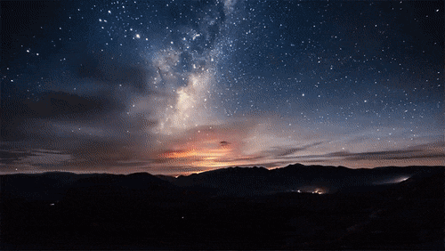
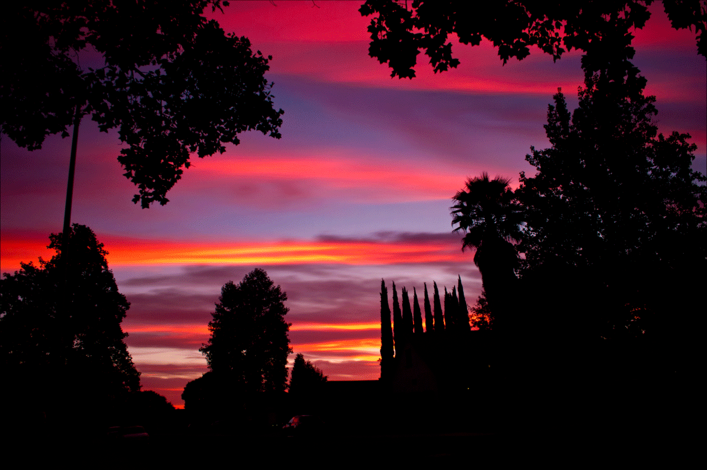
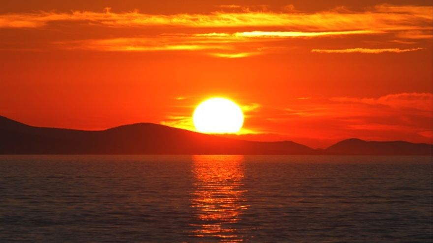
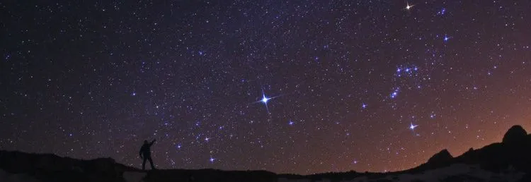

| 1. Amanecer | ||
| 2. Atardecer | ||
| 3. Observación del cielo de día | ||
| 3.1. El Sol | ||
| 3.2. La Luna | ||
| 3.3. Los planetas | ||
| 3.4. Cometas | ||
| 3.5. Estrellas | ||
| 3.5. Satélites artificiales, la ISS y el Hubble | ||
Amanecer |
|||
|---|---|---|---|
| La palabra amanecer es el término que mayormente se emplea para indicar el momento de la salida del sol sobre el horizonte, es decir, el amanecer es la aparición de la luz del día, este acontecimiento de la aparición de la luminosidad natural nos hace saber a las personas que ya ha amanecido y que se ha dado comienzo al día1. |  | ||
| Volver arriba | |||
Atardecer |
|||
|---|---|---|---|
|  | Literalmente significa la última hora de la tarde, cuando empieza a debilitarse la luz solar. Hay quien asocia los atardeceres a un momento de reflexión, puesto que es el paso al final del día y nos invita a pensar sobre lo que hemos hecho. Si metafóricamente se amplía al ocaso de la vida, en nuestros últimos momentos, es la hora de hacer repaso a todos los años vividos2. | ||
| Volver arriba | |||
Observación del cielo de día |
|||
|---|---|---|---|
| Volver arriba | |||
| El Sol | |||
| El Sol es el astro por excelencia para observar durante el día. Tal vez una de las razones por las cuales no es muy común hacerlo es por la excluyente precaución que hay que tener para observarlo, siempre indirectamente. Cualquier intento de ver el Sol a través de binoculares, telescopios o incluso a simple vista, puede y suele resultar en una CEGUERA PERMANENTE. De modo que para observar el Sol, existen otros métodos: Proyección solar: es el método más seguro y accesible. Requiere de un telescopio (refractor y pequeño, de otro tipo puede dañarse por el calentamiento), y un cartón de color claro. Nunca hay que buscar, u observar el Sol viendo por el ocular del telescopio. En lugar de eso, hay que colocar el cartón donde iría nuestro ojo, apuntar el telescopio hacia donde se ubica el Sol, y luego acercar y alejar el cartón hasta que la imagen del Sol quede proyectada y enfocada en el cartón. Se obtienen mejores resultados rodeando al telescopio de oscuridad. Filtro solar: si posees binoculares o un telescopio y quieres ver el Sol directamente, es obligatorio el uso de un filtro solar adecuado. Estos filtros se colocan en el tubo por donde entra la luz, nunca hay que utilizar un filtro que se coloque en el ocular, porque el calor allí concentrado puede fácilmente romper el presunto “filtro”, y permitir el paso de la luz del Sol directamente sobre el desguarnecido ojo. |
|||
|  | |||
| Volver arriba | |||
| Estrellas | |||||
| Aunque no las veamos, las estrellas están ahí arriba durante el día. Con un telescopio poderoso, y con la ayuda de un buscador computarizado, es posible distinguir el brillo de las estrellas más brillantes, como Sirio. Por supuesto, si se consigue ubicar la estrella, sólo será posible distinguir un débil resplandor. Pero no deja de ser una experiencia interesante, o una demostración educativa muy eficaz para explicar la rotación constante de la Tierra. | |||||
|  | |||||
| Volver arriba | |||||
| Satélites artificiales, la ISS y el Hubble | |||||
| En el cielo del día pueden aparecer brillos que se mueven describiendo una línea a una velocidad constante. Su observación no difiere mucho de la de un avión normal. El paso de todos los satélites capaces de brillar durante el día pueden encontrarse en línea en el sitio Heavens-Above, insertando las coordenadas geográficas del observador. Dentro de estos satélites se incluye también el paso del telescopio Hubble, que se alcanza a ver incluso durante el día, en las horas previas al amanecer o atardecer. La Estación Espacial Internacional (ISS), sin embargo, puede verse a plena luz del día, como una brillante estrella que se mueve. Esperar su paso por el cielo es una experiencia muy recomendable. | |||||
 |
|||||
| Para ver la órbita de la ISS en tiempo real dé click aquí | |||||
| Volver arriba | |||||
| 1Definición ABC, 2022. | ||
| 2Definición ABC, 2022. | ||
| Volver arriba | ||